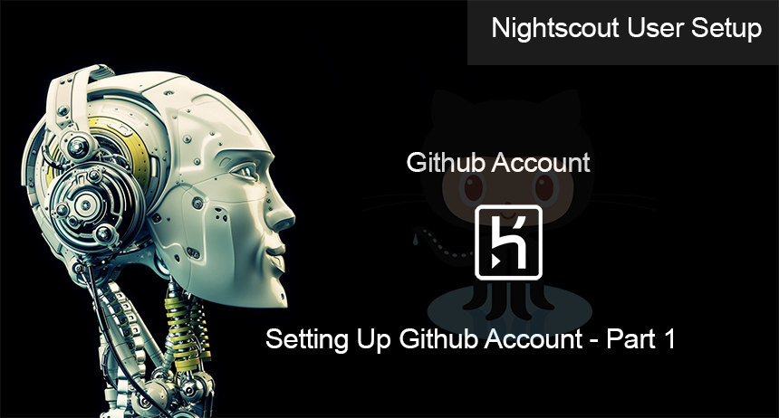

Welcome to The Diabetic way
For full Website content visit The Diabetic Way.

Part 1: Setting up the Github for Nightscout
For setting up Nightscout I have used a Dexcom G6 with xdrip as my uploader as well as Android APS, but I will imagine they will also work
with other devices and setups too! You do this at your own risk as my instructions are for educational purposes only and you should check with your GP or specialist or Endo, not sure how many more names I need to put here for doctors 😊 as I do not know all the worlds ways they are treated!
If you would like to follow these instructions with video then see below other wise continue step by step below
| video Instructions, |
1. First Sign up for Github Acount Click Here
2. Fill in all of your account details on screen and keep them written down in a safe place to keep.
3.

3.1.

4. After filling in your details you will then need to do a puzzle Puzzle

5. After doing the puzzle you will be sent an email, so check your email for the code sent to you!

6. Now enter the code sent to you to finish the setup

7. Just fill in the rest of the details to what you want to use in my case I SELECTED all the tools needed!

8. Now click on the Cat icon to get to your main Github account.

9. Click this Link to take you to the Nightscout Main Repository make sure to open it in a new tab: https://github.com/nightscout/cgm-remote-monitor
10. Now fork it from Nightscout Main repository to your own respository (in my case) thediabeticway23

11. Once you have forked it from Nightscout Repo to your own repo you should be able to go to it, to see all the files!
| Note! |
| Bookmark this page,( thediabeticway23 / cgm-remote-monitor) for revisits from time to time. In your case the name you made for ( Your Github account name / cgm-remote-monitor) I would also bookmark the Nightscout Repo for updates later, ( nightscout / cgm-remote-monitor) Here |
Now we need to Do
Part 2: Setting up Heroku Account
https://atlas-night-out.github.io/Xdrip-AndroidAps-Nightscout-readthetips/Nightscout/Setting_up_Heroku_Account_part2/
Diabetes UK